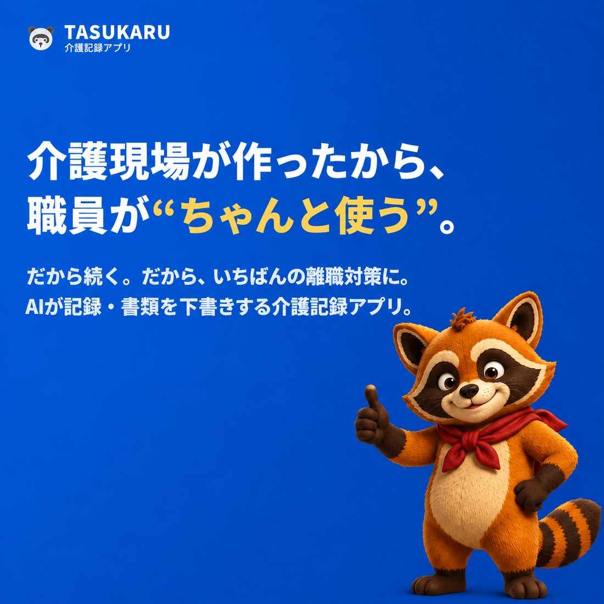

App development
介護施設向けのソフトづくりアプリ開発
介護の現場を、テクノロジーで支える。記録・情報の共有・書類づくりの手間を減らして、職員が利用者さんと向き合う時間を増やします。
INTRODUCING!
TASUKARU-KUN!タスカルくん
現場のピンチに、ただいま参上！
- 正体
- TASUKARU の看板ヒーロー
- 目印
- 風になびく赤いスカーフ
- 得意わざ
- 記録と書類の下書きを、あっという間に
- 出動先
- 介護の現場ならどこへでも
 DASH!!
DASH!!TASUKARU
タスカル
毎日の記録から書類まで。介護施設の仕事を、ひとつのクラウドで。
TASUKARU は、介護施設の業務を支えるクラウドサービスです。毎日の記録、利用者さんの情報の共有、契約書・重要事項説明書・アセスメントなどの書類づくりをまとめて行えます。職員の入力の手間を減らし、仕事を効率よく進められるようにします。
記録と情報の共有
バイタル・ケアの記録・利用者さんの情報を、チームで共有できます。
書類づくりの効率化
契約書や重要事項説明書などを、かんたんに作って出力できます。
どこからでも
クラウドなので、必要な情報にどこからでもアクセスできます。
現場から
生まれたソフト
利用者さんを送り出して事務所に戻ると、机の上には山の様に残った記録を必要とする書類と、月末に向けた書類の山が溜まっている。
「もっと利用者さんと話す時間があればいいのに」。そうこぼしながらパソコンに向かう職員の背中を、私たちは何度も見てきました。
介護の道を選んだ人は、書類を書きに来ているんではない。
目の前の誰かの役に立ちたくて、この仕事をしています。
それなのに、一日の多くの時間が、書類とパソコンの入力に消えていく。
確かに記録は大切です。
でも、記録のために利用者さんと向き合う時間が削られるのは違う。
私たちはそう考えています。
AIを使ったサービスが乱立する中、介護現場の人間が実際に作っているアプリは少ないと思います。
機能訓練型デイサービス「ココカラプラス」の現場で、職員の「ここが大変」「こうなったら助かる」を一つずつ拾い、試しては直してきたのが「TASUKARU（タスカル）」です。
職員が笑顔で続けられる職場は、利用者さんの安心にもつながります。
その時間を1分でも増やしたくて、私たちは今日も現場で使いながら、「TASUKARU」を育てています。
このホームページや接骨院・ボディケアのLINE予約の仕組みも、自分たちで開発して作っています。

お問い合わせ
TASUKARU についてのご質問・導入のご相談は、こちらからお送りください。内容はすぐに担当へ届きます。
- 会社名
- 合同会社LIFE PLUS（LIFE PLUS LLC）
- 代表
- 岸本 洋幸
- 所在地
- 〒471-0832 愛知県豊田市丸山町7丁目49番地6
- 事業内容
- 介護施設向け業務支援ソフト「TASUKARU」の開発・提供／機能訓練型デイサービス・接骨院・ボディケアの運営
- メール
- お問い合わせフォーム